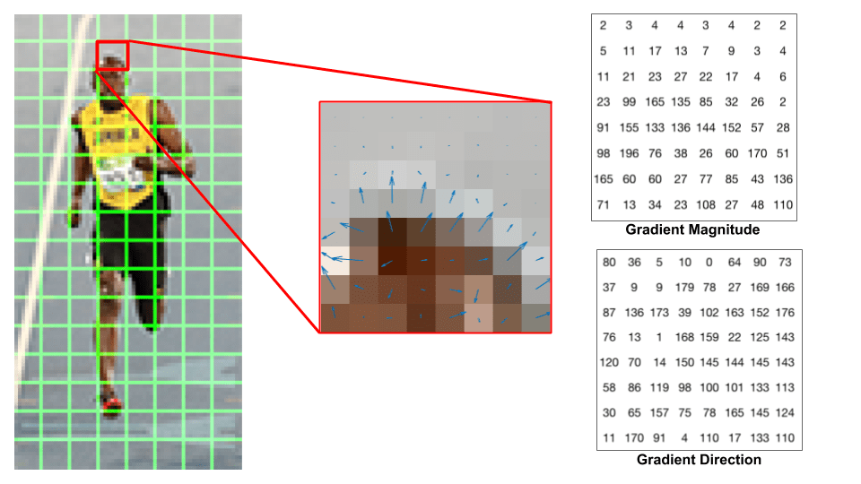
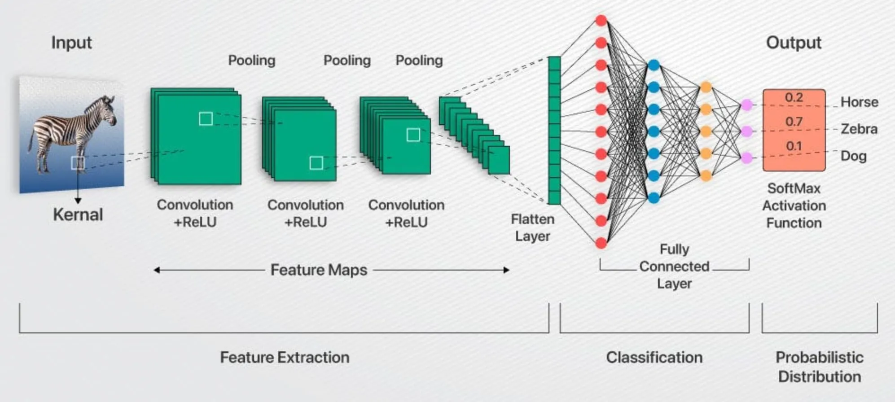

Webcam Face ID Prototype
With my partner Nathan Zhang, we built a live webcame face detection using a Python module wrapper for C++'s OpenCV library.
← Back to Projects View on GitHub →Overview
Face ID is a biometric authentication technology that uses facial recognition to verify a user’s identity. In our case, we created a prototype that refers to pre-saved reference image to identify people in a live webcam feed and add their name next to their face. It also faces with no reference images and labels them as "unknown".
To start, add reference pictures of faces that you would like the program to be able to recognize. Only one picture is needed per face. The program also needs the name of each person, which it later uses in labeling after identifying the person in a webcam feed. The program uses a pre-built, CNN-based model to convert the reference images into a 128-dimensional encoding. Later, after faces are recognized from the webcam feed, it uses the same model to encode the faces too. It then compares the encoding of each detected face to those of the reference images. For each image, it returns the closest (i.e. with smallest Euclidean distance) match, as long as it matches the similarity threshold, which is 0.6 for our case.

Fig 1.1 HOG: History of Oriented Gradents; A technology used in detecting faces in a webcam feed

Fig 1.2 CNN: Convolutional Neural Network; A technology used in learning similarities between faces during image identification
Screeshot Video
Here will be a screenshot video of the too.
Reflection on Class Discussion
When preparing the discussion that Nathan and I led, we focused on the epistemological questions raised by face recognition technologies like Face ID. One of the central questions we posed was whether a face recognition model that performs better than a human at identifying faces could be considered more knowledgeable than a human. At first, I tended to separate human knowledge and machine outputs fairly clearly. However, our discussion made that distinction feel less obvious. Since both humans and machine learning models rely on pattern recognition, the difference between the two may not lie purely in the mechanism of recognition itself.
Another question we raised asked what should happen when a conflict arises between human recognition and a facial recognition system—for example, when CCTV software identifies a suspect but an eyewitness disagrees. This question sparked interesting discussion about trust and authority in technological systems. Some classmates suggested that high-performing models might deserve greater trust because they are statistically reliable, while others argued that human perception carries contextual understanding that a model might lack. These discussions made me appreciate more the fact that the philosophical problem is not simply whether machines can recognize faces accurately, but how societies decide whose knowledge counts when humans and machines disagree.
Watching other groups present their everyday technologies also shaped how I thought about the philosophical implications of digital systems. In particular, the presentation on NFTs by Adit and Hudson made me think about questions of ownership in digital environments. While I was not previously very familiar with NFTs, the project highlighted how technologies can attempt to establish ownership and authenticity in spaces where copying and replication are extremely easy. This idea of proving authenticity in digital contexts parallels some of the concerns around Face ID.
Reflection on Philosophical Approaches
The epistemological frameworks we explored in class strongly influenced how I think about technologies like Face ID. Epistemology asks what it means to know something and how knowledge can be justified. A face recognition model does not “know” someone in the same way a human does—it does not have experiences, memories, or a personal relationship with the person it identifies. Instead, it produces probabilistic outputs based on patterns in data. Yet if a system consistently produces accurate identifications, it begins to resemble something that functions like knowledge in practice. This raises an interesting question: if knowledge is tied to reliable recognition of truth, then systems like Face ID challenge our assumptions about knowledge being uniquely human.
One idea that helped me reflect on this problem more deeply came from reliabilism, a theory of knowledge that was not directly covered in class. Reliabilism suggests that a belief counts as knowledge if it is produced by a reliable process. When applied to face recognition systems, this framework creates an interesting tension. If a machine learning model identifies faces with extremely high accuracy, reliabilism might suggest that its outputs have epistemic legitimacy. At the same time, human recognition involves perception, experience, and contextual reasoning that cannot easily be reduced to statistical reliability.
Works Cited
1. Non-Fungible Tokens and Intellectual Property Rights. (n.d.). Eurojust.